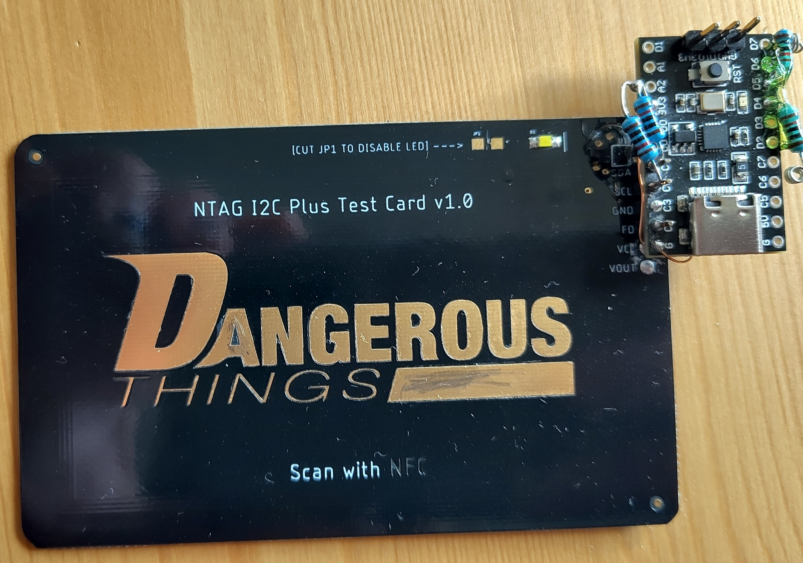

Bank switching NFC Keyring tags with the CH32V003
DATE
Concept
Whilst one day I hope to get a Dangerous things NFC implant there's some limitations with them. Them being implanted means you can't physically access it, and I like the idea of having an NFC tag with multiple profiles for different NDEF formatted contact information. So I've been bouncing the idea of a custom PCB NFC keychain around my head for a while thinking of how I was going to do it. My first thought was put an nRF52840 in it and use it's built in NFC hardware, but that would be costly and complicated, then I thought of just using an NXP NTAG IC and reprogramming it each time, but that's boring and fairly limiting. The breakthrough came after having a play with the CH32V003 in the PCB business card project. Some NTAG chips can act as an I2C EEPROM, whilst also doing energy harvesting, so the idea is an NFC tag with switchable "banks", the end user can swap around by energising it on their phone and physically interacting with the device somehow.
The actual amount of power one can harvest from these NTAG I2C ICs is either just enough or just about not enough, but I wasn't going to let that stop me from giving it a go. The last bit of motivation needed was finding a chip on a good pcb antenna with the I2C pins broken out for $25 from Dangerous Things. I got one of those on the way and started looking into the flash mechanics of the CH32V003.
Development
To get this tested and up and running it's easiest to start with known good hardware, when I was younger and dumber I might have jumped straight to the PCB and hope the vibes would carry me through but it's always easiest if one isn't fighting lots of unknowns at the same time. Plus I've still got a whole load of those Muselab CH32 boards sitting around in need of a home and I can't deny them their dream in life to be part of a contraption. As with the business card this is gonna be using CH32V003fun, with the CH32V003_lib_i2c I2C library.
The dangerous things test board was hooked up to the CH32 with 10k pullups on the I2C lines, and an additional 10k resistor on PD5 as a capsense button. Getting the I2C side of things runnign was trivial, before long I had it dumping all 0x0s out from the eeprom of the card, but I was struggling to write data to the card over NFC. The NFC tools android app didn't like the card and kept complaining of write failures, and I wasn't having any better luck with the proxmark 3 easy. The tag would enumerate when scanned with hf search, and give more granular data when inquired with hf mfu info, but write operations wouldn't get me anywhere. Turns out NTAG I2C chips have a pasword authentication mechanism for write ops which you cannot disable, the NXP Tagwriter app knows the default password and wrote things in happily. Once a working NDEF block was written to the tag it could easily be dumped out using the CH32, and after erasing the tag with tagwriter the previously dumped blocks could be restored and everything worked. The I2C library will also happily read into and write from a uint32_t array which is very useful for storing to flash on the CH32, as that works in pages of 16 uint32_ts. One concern I had was capacitive sensing wouldn't work properly on a wirelessly powered device, and initially it did seem like it might misbehave, but if one finger was put on the grounded USB port shield it worked perfectly, so access to a ground pad must be preserved in the final board design.

Whilst progressing with trying to read large blocks in and out of memory I managed to make a fairly massive mistake. I wrote an overlong block with the wrong start location to the chip over i2c. This managed to overwrite the NFC capability container, change the I2C address and also set a load of lock bytes so I couldn't wipe it over NFC. I think it was very lucky that the chip wasn't completely bricked through this spectacularly incompetent maneuver, and I managed to recover the chip through some careful reading of the datasheet and fenagling some bits back into shape manually, then restoring a dump I took with my proxmark before starting just to be sure. A lesson was very much learnt, it would be nice if NXP offered some developer chip with a way to reset all the saved memory, but I'm not really sure how they'd do it tbh.
After making a thousand more array indexing errors the board could recall and exchange the data between the ntag chip and flash memory. The write times weren't ideal, but after a bit more testing I figured out the write times were due to the delay_ms function not scaling with the custom slower sysclock, the delays had to be scaled down accordingly too, writes now take only a fraction of a second and seem to work every time. After adding a 4.7u and a 100nF capacitor on the VOUT connection of the card and connecting it to the VCC of the card and microcontroller the whole thing was happy to run off the card power, the energy harvesting kept the voltage just about perfect to make it all work.
Now the fundamental questions of the project had been answered it was time to tackle the usability aspect. There's not going to be a large opportunity for user interaction in the final device, only a few capsense probes and an led, maybe two at most, so a proper user interface has to be thought of. The main actions are do nothing, read from bank 0-3 and write to bank 0-3. It would also be good if the device could display the current bank. Originally I planned to add a second LED but I was concerned the power budget wouldn't allow for this. Inspired by the TBS FPV video transmitters I used to use I adopted a system of long press and short presses, with long blinks to indicate the mode and short blinks to indicate the parameters. Because there were two buttons it could be a little more flexible. When the board first powers up, it would sit and short pressing either button wouldn't do anything, long pressing the first button switches it into the read mode, where it would read data from the flash into the NTAG, then pressing the second button switches which profile is being loaded into the NTAG, and then a short press of the first button actually triggers the interaction. Long pushing the first button again switches the system into write mode where it writes the data from the ntag into the CH32 flash at the profile selected by the second button. After using this for a bit of testing I found that it was a bit frustrating swapping profiles, so I added additional functionality where profile 1 and 2 can be accessed from the first mode by short pressing one of the two buttons, so the most frequent profiles can be rapidly accessed, with two additional profiles available with a bit more interaction.
PCB
The PCB for this project is a little tricky because of the NFC antenna. I once had to do a PCB 125kHz RFID antenna for a university project and it didn't really work, so I wasn't massively confident that I could get this working. After playing around with some calculators for a while I settled on just going for it and seeing what happens. PCBs are fairly cheap after all. One thing I did find whilst researching are NFC antennas you can solder onto citcuit boards, including one that looks like a nice chunky SMD inductor and still offers good read ranges, whilst they're not really ideal for this project they're definitely a cool thing to keep in mind for other projects.
I'm fairly sure one of the golden rules of PCB antenna design is to not put components or traces on the back or in the way, but this keyring tag has to be quite small so there wasn't really anywhere else to put them. This runs the risk of compromising a lot of things and is definitely not the ideal way to do it. My hope was that i could just tune out this nightmare by putting the tag on a VNA, fiddling with tuning capacitors and seeing what happens. I solved the ground pad issue by running a decorative exposed ground trace around the whole edge of the tag, which also serves as a convenient way to route ground for the LED.